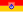
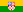
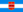
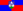
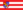
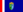

List of Croatian counties by GDP
{kind=link}
Gross domestic product (GDP) of the counties of Croatia significantly varies from one county to another as economic development of Croatia varies substantially between Croatia's geographic regions reflecting historic developments, infrastructure available, especially routes of transportation, and diverse geographic setting of various parts of the country, especially in respect of areas situated along the Adriatic Sea shores, where tourism represents a major source of income.
Croatian counties by GDP (PPS) per inhabitant
[edit]{kind=link}
| Rank | County | 2022 (in EUR)[1][2] |
2022 (in percentage of EU average) |
|---|---|---|---|
| 1 | City of Zagreb | 44,700 | 126 |
| 2 | 30,500 | 86 | |
| 3 | 29,800 | 84 | |
| 4 | 26,300 | 74 | |
| - | 26,200 | 74 | |
| 5 | 22,900 | 65 | |
| 6 | 22,500 | 63 | |
| 7 | Zadar | 22,200 | 63 |
| 8 | Lika-Senj | 22,200 | 63 |
| 9 | 21,500 | 61 | |
| 10 | 21,300 | 60 | |
| 11 | Osijek-Baranja | 20,700 | 58 |
| 12 | 20,400 | 58 | |
| 13 |  Karlovac | 19,200 | 54 |
| 14 | 19,200 | 54 | |
| 15 |  Bjelovar-Bilogora | 18,600 | 53 |
| 16 | 18,200 | 51 | |
| 17 | 16,800 | 47 | |
| 18 | 16,500 | 47 | |
| 19 | 15,900 | 45 | |
| 20 |  Virovitica-Podravina | 15,600 | 44 |
| 21 | 15,000 | 42 |
{kind=link}
{kind=link}
{kind=link}
{kind=link}
{kind=link}
{kind=link}
{kind=link}
Dynamics
[edit]The Croatian economy is significantly centralized, as the bulk of its GDP (31.4%) is generated within the nation's capital and the most populous city—Zagreb.[3] The city administered area covers 1.1% of territory,[4] and encompasses 18.4% of Croatia's population.[5]
According to 2009 data, by far the largest GDP is generated in the city of Zagreb, which is constituted as a county and a city at the same time.[4] GDP of the city of Zagreb amounts to 14,079 billion Euro, surpassing the second ranked county in terms of GDP—Split-Dalmatia County—by more than 10 billion Euro. The Split-Dalmatia is closely followed by Primorje-Gorski Kotar County, the two counties centering on the second and third largest cities in Croatia—Split and Rijeka—and benefiting from considerable trade, processing industry, and tourism.[6][7]
The two counties contribute 8.6% and 8.4% of Croatia's GDP respectively. Three following counties, ranked by the GDP, are Istria, Osijek-Baranja and Zagreb counties—the latter encompassing territory surrounding the capital. The lowest GDP is achieved by Lika-Senj, Požega-Slavonia and Virovitica-Podravina counties. The low figures, ranging from 435 to 561 million Euro are consequence of not only low level of economic development, but also of low populations of the counties.
All the counties recorded steady growth of their GDP until 2008, when the values peaked. Between 2000 and 2008 Croatian GDP grew by 105%, but growth of economy in the individual counties was not uniform—the growth in the period ranged from 60% recorded in the Sisak-Moslavina County to as much as 154% in the Zadar County. The greatest growth rate in the period, besides the Zadar County, was achieved by Dubrovnik-Neretva (135%) and Šibenik-Knin counties as well as the city of Zagreb (120%). In 2009, Croatian GDP fell by 5.5%, with similarly uneven variation of the county GDP figures. The largest drops were recorded in Virovitica-Podravina (−15.1%), Lika-Senj (−11.6%), Šibenik-Knin (−11.4%) and Krapina-Zagorje (−11.3%) counties. The lowest rate of economic decline was observed in Istria (−2.5%), Zagreb (−2.6%) and Sisak-Moslavina (−2.6%) counties.[8]
Croatian counties by GDP
[edit]| Counties of Croatia by GDP, in million Euro | ||||||||||||||||||||
|---|---|---|---|---|---|---|---|---|---|---|---|---|---|---|---|---|---|---|---|---|
| County | 2000 | 2001 | 2002 | 2003 | 2004 | 2005 | 2006 | 2007 | 2008 | 2009 | 2010 | 2011 | 2012 | 2013 | 2014 | 2015 | 2016 | 2017 | 2018 | 2019 |
| 520 | 569 | 639 | 645 | 688 | 698 | 800 | 804 | 953 | 917 | 834 | 823 | 786 | 790 | 789 | 809 | 855 | 874 | 925 | 971 | |
| Brod-Posavina | 564 | 628 | 687 | 713 | 779 | 771 | 849 | 918 | 1,032 | 952 | 914 | 917 | 895 | 888 | 853 | 879 | 917 | 969 | 1,016 | 1,130 |
| Dubrovnik-Neretva | 573 | 630 | 676 | 754 | 883 | 977 | 1,083 | 1,292 | 1,340 | 1,267 | 1,248 | 1,208 | 1,202 | 1,234 | 1,260 | 1,313 | 1,403 | 1,532 | 1,587 | 1,789 |
| Istria | 1,420 | 1,614 | 1,814 | 1,980 | 2,182 | 2,291 | 2,482 | 2,729 | 2,842 | 2,768 | 2,773 | 2,762 | 2,635 | 2,631 | 2,666 | 2,747 | 2,947 | 3,106 | 3,162 | 3,343 |
| Karlovac | 586 | 713 | 785 | 758 | 777 | 835 | 943 | 1,048 | 1,107 | 998 | 969 | 978 | 948 | 961 | 934 | 961 | 1,008 | 1,031 | 1,035 | 1,098 |
|  Koprivnica-Križevci | 723 | 762 | 830 | 845 | 853 | 855 | 988 | 1,046 | 1,069 | 998 | 935 | 926 | 906 | 919 | 905 | 916 | 961 | 991 | 979 | 1,076 |
| 569 | 655 | 681 | 706 | 729 | 815 | 858 | 947 | 974 | 868 | 807 | 815 | 803 | 823 | 837 | 867 | 928 | 990 | 1,021 | 1,116 | |
| 235 | 250 | 309 | 384 | 522 | 407 | 429 | 417 | 491 | 445 | 416 | 405 | 382 | 388 | 379 | 388 | 402 | 427 | 436 | 478 | |
| 510 | 562 | 644 | 654 | 691 | 737 | 841 | 892 | 1,034 | 977 | 933 | 941 | 929 | 1,088 | 959 | 986 | 1,045 | 1,109 | 1,142 | 1,255 | |
| 1,352 | 1,459 | 1,668 | 1,700 | 1,872 | 2,043 | 2,249 | 2,600 | 2,834 | 2,642 | 2,507 | 2,514 | 2,421 | 2,438 | 2,375 | 2,436 | 2,544 | 2,581 | 2,572 | 2,793 | |
| 325 | 355 | 380 | 420 | 451 | 464 | 478 | 508 | 554 | 504 | 497 | 482 | 458 | 461 | 433 | 440 | 453 | 466 | 499 | 545 | |
| 2,111 | 2,138 | 2,261 | 2,543 | 2,685 | 3,066 | 3,371 | 3,560 | 4,060 | 3,820 | 3,822 | 3,905 | 3,981 | 3,849 | 3,849 | 3,854 | 3,961 | 4,177 | 4,270 | 4,306 | |
| 925 | 938 | 972 | 989 | 1,033 | 1,137 | 1,335 | 1,262 | 1,435 | 1,447 | 1,451 | 1,439 | 1,434 | 1,306 | 1,221 | 1,268 | 1,247 | 1,266 | 1,309 | 1,416 | |
| Split-Dalmatia | 1,924 | 2,118 | 2,318 | 2,529 | 2,898 | 3,061 | 3,427 | 3,934 | 4,115 | 3,804 | 3,788 | 3,695 | 3,578 | 3,583 | 3,581 | 3,712 | 3,913 | 4,133 | 4,278 | 4,819 |
| Šibenik-Knin | 423 | 450 | 511 | 581 | 659 | 748 | 765 | 902 | 923 | 802 | 859 | 856 | 835 | 851 | 852 | 862 | 903 | 988 | 1,027 | 1,124 |
|  Varaždin | 894 | 996 | 1,139 | 1,175 | 1,166 | 1,229 | 1,347 | 1,451 | 1,637 | 1,549 | 1,463 | 1,456 | 1,436 | 1,467 | 1,462 | 1,506 | 1,601 | 1,718 | 1,865 | 2,014 |
| Virovitica-Podravina | 357 | 406 | 438 | 458 | 471 | 476 | 555 | 590 | 615 | 546 | 516 | 526 | 504 | 496 | 455 | 460 | 485 | 500 | 536 | 580 |
| Vukovar-Syrmia | 624 | 686 | 762 | 816 | 864 | 928 | 1,079 | 1,109 | 1,260 | 1,171 | 1,090 | 1,092 | 1,049 | 1,048 | 999 | 1,031 | 1,076 | 1,120 | 1,171 | 1,299 |
| Zadar | 627 | 733 | 829 | 982 | 1,055 | 1,166 | 1,238 | 1,443 | 1,618 | 1,478 | 1,405 | 1,383 | 1,366 | 1,386 | 1,395 | 1,445 | 1,527 | 1,671 | 1,797 | 1,940 |
| 1,284 | 1,272 | 1,583 | 1,653 | 1,823 | 2,059 | 2,128 | 2,419 | 2,653 | 2,555 | 2,398 | 2,449 | 2,439 | 2,450 | 2,466 | 2,549 | 2,651 | 2,832 | 3,011 | 3,333 | |
| 6,912 | 7,806 | 8,569 | 9,458 | 10,400 | 11,717 | 12,954 | 14,059 | 15,439 | 14,561 | 15,586 | 15,383 | 15,055 | 14,778 | 14,754 | 15,206 | 15,818 | 16,782 | 17,544 | 19,178 | |
| Source: Croatian Bureau of Statistics[9] | ||||||||||||||||||||
{kind=link}
{kind=link}
{kind=link}
{kind=link}
{kind=link}
{kind=link}
{kind=link}
{kind=link}
County nominal GDP per capita
[edit]{kind=link}
The highest nominal GDP per capita is recorded in the City of Zagreb at 22,695 Euro in 2018. The second, third and fourth ranked counties in terms of the GDP per capita are Istria, Primorje-Gorski Kotar and Dubrovnik-Neretva, at 15,570 Euro, 14,797 Euro and 13,277 Euro respectively. The four are the only counties of Croatia enjoying GDP per capita exceeding national average of 12,270 Euro. The lowest GDP per capita is recorded in the Virovitica-Podravina (6,525 Euro), Brod-Posavina (6,607 Euro) and Požega-Slavonia (6,620 Euro) counties.[10] The city of Zagreb ranks first among and the counties of Croatia in terms of the GDP per capita continuously since 2000. The Istria County or the Primorje-Gorski Kotar County rank the second and third throughout the period except in 2004, when the Lika-Senj County takes third place. The largest net change of the ranking was achieved by the Šibenik-Knin County, improving its ranking by 11 places since 2000 when its GDP per capita was the 19th largest in Croatia. The Brod-Posavina, Požega-Slavonia, Virovitica-Podravina and Vukovar-Syrmia counties occupy the last four rankings continuously since 2000.[11]
| Counties of Croatia by GDP per capita, in Euro | ||||||||||||||||||||
|---|---|---|---|---|---|---|---|---|---|---|---|---|---|---|---|---|---|---|---|---|
| County | 2000 | 2001 | 2002 | 2003 | 2004 | 2005 | 2006 | 2007 | 2008 | 2009 | 2010 | 2011 | 2012 | 2013 | 2014 | 2015 | 2016 | 2017 | 2018 | 2019 |
| 4,007 | 4,383 | 4,951 | 5,042 | 5,417 | 5,539 | 6,395 | 6,489 | 7,756 | 7,522 | 6,907 | 6,888 | 6,657 | 6,766 | 6,829 | 7,107 | 7,647 | 7,958 | 7,986 | 9,132 | |
| 3,425 | 3,812 | 4,171 | 4,345 | 4,766 | 4,731 | 5,223 | 5,660 | 6,384 | 5,921 | 5,731 | 5,789 | 5,691 | 5,700 | 5,539 | 5,810 | 6,195 | 6,726 | 6,607 | 8,211 | |
| Dubrovnik-Neretva | 4,886 | 5,373 | 5,738 | 6,378 | 7,442 | 8,197 | 9,025 | 10,698 | 11,024 | 10,351 | 10,174 | 9,855 | 9,812 | 10,083 | 10,297 | 10,737 | 11,500 | 12,608 | 13,277 | 14,673 |
| Istria | 7,184 | 8,160 | 9,117 | 9,880 | 10,813 | 11,267 | 12,116 | 13,221 | 13,691 | 13,285 | 13,297 | 13,270 | 12,684 | 12,665 | 12,811 | 13,199 | 14,165 | 14,915 | 15,570 | 15,960 |
| 4,181 | 5,082 | 5,635 | 5,491 | 5,666 | 6,139 | 6,989 | 7,830 | 8,341 | 7,598 | 7,458 | 7,615 | 7,461 | 7,651 | 7,541 | 7,868 | 8,373 | 8,701 | 8,301 | 9,510 | |
| 5,955 | 6,269 | 6,858 | 7,025 | 7,134 | 7,181 | 8,335 | 8,878 | 9,108 | 8,545 | 8,052 | 8,020 | 7,890 | 8,039 | 7,969 | 8,149 | 8,660 | 9,066 | 8,711 | 10,110 | |
| 4,089 | 4,702 | 4,919 | 5,129 | 5,323 | 5,972 | 6,313 | 7,008 | 7,250 | 6,479 | 6,049 | 6,142 | 6,091 | 6,287 | 6,439 | 6,721 | 7,265 | 7,830 | 7,919 | 8,954 | |
| 4,219 | 4,493 | 5,582 | 6,965 | 9,466 | 7,446 | 7,927 | 7,783 | 9,277 | 8,515 | 8,091 | 7,984 | 7,652 | 7,874 | 7,812 | 8,134 | 8,571 | 9,297 | 8,878 | 10,725 | |
| Međimurje | 4,472 | 4,930 | 5,644 | 5,729 | 6,056 | 6,459 | 7,375 | 7,830 | 9,086 | 8,583 | 8,196 | 8,273 | 8,176 | 9,592 | 8,480 | 8,751 | 9,328 | 9,989 | 10,302 | 11,476 |
| Osijek-Baranja | 4,247 | 4,582 | 5,239 | 5,354 | 5,914 | 6,480 | 7,174 | 8,353 | 9,162 | 8,578 | 8,183 | 8,249 | 7,990 | 8,105 | 7,965 | 8,270 | 8,779 | 9,098 | 8,684 | 10,232 |
| 3,904 | 4,255 | 4,572 | 5,066 | 5,479 | 5,658 | 5,874 | 6,286 | 6,897 | 6,330 | 6,314 | 6,194 | 5,971 | 6,081 | 5,774 | 5,973 | 6,307 | 6,681 | 6,620 | 8,217 | |
| Primorje-Gorski Kotar | 7,123 | 7,210 | 7,622 | 8,575 | 9,051 | 10,326 | 11,337 | 11,959 | 13,642 | 12,847 | 12,873 | 13,185 | 13,474 | 13,061 | 13,103 | 13,204 | 13,686 | 14,559 | 14,797 | 15,232 |
|  Sisak-Moslavina | 4,884 | 4,952 | 5,158 | 5,285 | 5,552 | 6,156 | 7,292 | 6,966 | 8,018 | 8,184 | 8,321 | 8,372 | 8,465 | 7,832 | 7,459 | 7,899 | 7,939 | 8,284 | 7,868 | 9,706 |
| Split-Dalmatia | 4,422 | 4,866 | 5,278 | 5,723 | 6,508 | 6,820 | 7,593 | 8,684 | 9,059 | 8,361 | 8,323 | 8,121 | 7,866 | 7,876 | 7,876 | 8,184 | 8,655 | 9,183 | 9,636 | 10,759 |
| 3,855 | 4,094 | 4,631 | 5,254 | 5,946 | 6,733 | 6,863 | 8,081 | 8,262 | 7,202 | 7,788 | 7,855 | 7,764 | 7,998 | 8,086 | 8,267 | 8,776 | 9,737 | 9,713 | 11,325 | |
| Varaždin | 4,952 | 5,516 | 6,327 | 6,550 | 6,525 | 6,890 | 7,564 | 8,165 | 9,233 | 8,758 | 8,298 | 8,281 | 8,193 | 8,412 | 8,434 | 8,752 | 9,389 | 10,176 | 10,899 | 12,112 |
| 3,887 | 4,416 | 4,793 | 5,029 | 5,222 | 5,329 | 6,253 | 6,703 | 7,048 | 6,326 | 6,037 | 6,213 | 6,012 | 5,979 | 5,542 | 5,704 | 6,135 | 6,480 | 6,525 | 7,869 | |
| Vukovar-Syrmia | 3,277 | 3,604 | 4,018 | 4,330 | 4,617 | 4,985 | 5,825 | 6,012 | 6,853 | 6,401 | 6,016 | 6,094 | 5,856 | 5,961 | 5,772 | 6,082 | 6,498 | 6,999 | 6,730 | 8,606 |
| 4,050 | 4,726 | 5,289 | 6,193 | 6,579 | 7,186 | 7,534 | 8,676 | 9,640 | 8,752 | 8,281 | 8,114 | 7,985 | 8,084 | 8,146 | 8,478 | 9,003 | 9,901 | 10,803 | 11,544 | |
| 4,327 | 4,283 | 5,279 | 5,459 | 5,966 | 6,686 | 6,859 | 7,745 | 8,443 | 8,089 | 7,565 | 7,703 | 7,660 | 7,687 | 7,748 | 8,050 | 8,434 | 9,083 | 9,710 | 10,769 | |
| 8,962 | 10,114 | 11,091 | 12,238 | 13,418 | 15,082 | 16,642 | 18,005 | 19,709 | 18,526 | 19,765 | 19,453 | 18,986 | 18,578 | 18,479 | 18,992 | 19,711 | 20,879 | 22,695 | 23,742 | |
| Source:[12] | ||||||||||||||||||||
{kind=link}
{kind=link}
{kind=link}
See also
[edit]References
[edit]- ^ "Popularion estimte of Republic of Croatia, 2021" (PDF). dzs.hr/. Retrieved 2024-02-20.
- ^ "GDP (PPS) per inhabitant (Euro)". ec.europa.eu/. Retrieved 2024-02-20.
- ^ "Gross domestic product for Republic of Croatia, statistical regions at level 2 and counties, 2009". Priopćenje DZS. 49 (12.1.2). Zagreb: Croatian Bureau of Statistics. 14 March 2012. ISSN 1330-0350.
- ^ a b Ostroški, Ljiljana, ed. (December 2015). Statistički ljetopis Republike Hrvatske 2015 [Statistical Yearbook of the Republic of Croatia 2015] (PDF). Statistical Yearbook of the Republic of Croatia (in Croatian and English). Vol. 47. Zagreb: Croatian Bureau of Statistics. p. 62. ISSN 1333-3305. Retrieved 27 December 2015.
- ^ "Population by Age and Sex, by Settlements, 2011 Census". Census of Population, Households and Dwellings 2011. Zagreb: Croatian Bureau of Statistics. December 2012.
- ^ "Gospodarski profil županije" [Economic profile of the county] (in Croatian). Croatian Chamber of Economy. Retrieved 9 June 2012.
- ^ "Gospodarski profil županije Splitsko-dalmatinske" [Economic profile of the Split-Dalmatia County] (PDF) (in Croatian). Croatian Chamber of Economy. Archived from the original (PDF) on 3 December 2008. Retrieved 9 June 2012.
- ^ "Gross domestic product - Review by countries 2000-2018". dzs.hr. Retrieved 19 July 2021.
- ^ "Gross domestic product - Review by countries 2000-2019". dzs.hr/ (in Croatian). Retrieved 2022-02-15.
- ^ "Gross domestic product - Review by countries 2000-2018". dzs.hr. Retrieved 19 July 2021.
- ^ "Gross domestic product - Review by countries 2000-2018". dzs.hr. Retrieved 19 July 2021.
- ^ "Gross domestic product - Review by countries 2000-2019". dzs.hr/ (in Croatian). Retrieved 2022-02-15.